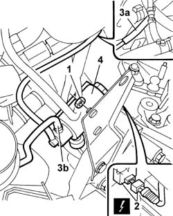
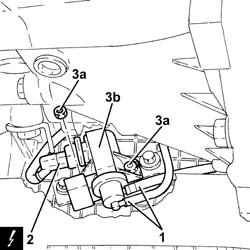

1064A28 SOLENOID VALVE FOR TURBOCHARGER VANE ACTUATOR - R.R.
- Path
- Procedures > 10 ENGINE > 1064 ENGINE TURBOCHARGING SYSTEM > 1064A turbo charger assembly > 1064A28 SOLENOID VALVE FOR TURBOCHARGER VANE ACTUATOR - R.R.
- Kind
- repair procedure (removal / refitting; the operation number is the code)
- Applies to
- engines: 1.9 JTD 8V, 1.9 JTD 16V; all production periods
- Interactive page
- https://sloeber94.github.io/elrnDB-a147/en/#/3025059
Applies to: engines: 1.9 JTD 8V; all production periods
 Removing
Removing
 Refitting
Refitting1016A10 sound-proofing cover - r + r
5530B52 Battery DRIP TRAY/SUPPORT - R.R.
1. Undo the nut securing the actuator to the bracket.
2. Disconnect the electrical connection from the vane actuator solenoid.
 | Name | Connector |
|---|---|---|
2 | Variable geometry turbine solenoid valve |
3. Disconnect the vacuum hoses from coupling (3a) with the vacuum pipe from fitting (3b) on the solenoid.
4. Remove the turbocharger vane actuator solenoid.

Applies to: engines: 1.9 JTD 8V; all production periods
Refitting
RemovingFit the solenoid for the turbocharger vane actuator.
Connect the vacuum hoses to the connector and solenoid.
Connect the electrical connection to the vane actuator solenoid.
| Name | Connector |
|---|---|---|
- | Variable geometry turbine solenoid valve |
Tighten the nuts securing the actuator to the beam.
Applies to: engines: 1.9 JTD 16V; all production periods
Removing
RefittingPosition the vehicle on the ramp.
Proceed with removal 7025A12 Engine front sound insulation COVER - R.R. .
Proceed with removal 7025A14 Bonnet LID - R.R. .
Proceed with removal 1016A10 sound-proofing cover - r + r .
Ensure that the ignition key is in the OFF position, then disconnect the negative battery terminal (-).
| Name | Connector |
|---|---|---|
- | Battery |
Proceed with removal 7055B54 under-engine guard - r r .
1. Disconnect the vacuum pipes from the solenoid valve for the turbocharger vanes actuator.
2. Disconnect the electrical connection from the turbocharger vane actuator solenoid.
| Name | Connector |
|---|---|---|
2 | Variable geometry turbine solenoid valve |
3. Undo the nuts (3a) and remove the turbocharger vane position actuator solenoid valve (3b).

Applies to: engines: 1.9 JTD 16V; all production periods
Refitting
RemovingFit the turbocharger vane actuator solenoid back in its housing and fix it using the nuts.
Connect the electrical connection to the turbocharger vane actuator solenoid.
Connect the vacuum pipes to the solenoid valve for the turbocharger vanes actuator.
Proceed with refitting 7055B54 under-engine guard - r r .
Connect the negative (-) battery terminal.
Proceed with refitting 1016A10 sound-proofing cover - r + r .
Proceed with refitting 7025A14 Bonnet LID - R.R. .
Proceed with refitting 7025A12 Engine front sound insulation COVER - R.R. .
Remove the car from the ramps.
Topics linked from this page (8)
- 1016A10 sound-proofing cover - r + r
- 5530B10 battery - r+r
- 5530B52 Battery DRIP TRAY/SUPPORT - R.R.
- 7025A12 Engine front sound insulation COVER - R.R.
- 7025A14 Bonnet LID - R.R.
- 7055B54 under-engine guard - r r
- A1B Battery ( Connectors )
- L36 Variable geometry turbine solenoid valve